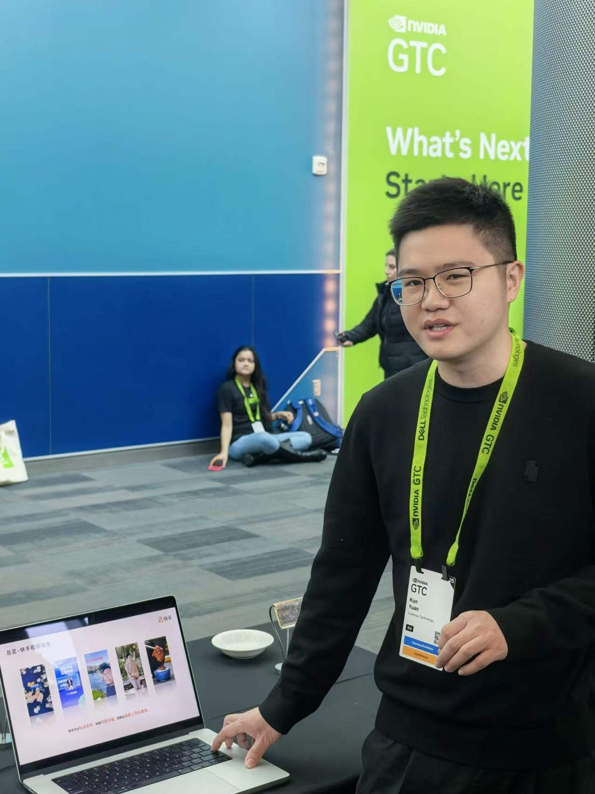
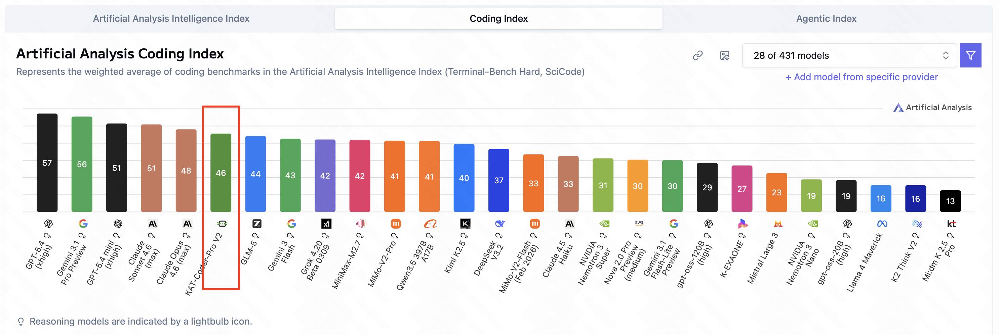

|
Kun Yuan (袁坤)
Researcher & Engineer
in Agentic LLM and AIGC
Kuaishou Technology
Research Interests: Large Language Models, Agentic Coding, Reinforcement Learning,
Diffusion-based Video Generation, Large-scale AI/RL Infrastructure
Email: yuankunbupt at gmail dot com
Wechat: yuankun_casia
[Google
Scholar]
[LinkedIn]
|

|
Short Bio
I am an algorithm R&D Engineer, currently working at Kuaishou
Technology since 2021. At Kuaishou, my work involves two main directions. Since 2025, I have
been working on foundation Large Language Models (LLMs), focusing on enhancing agentic coding
capabilities through RL-based post-training. This work facilitated the development of the KAT (Kwai
Auto-Think) models and the coding agent Codeflickr,
which currently serves over 10,000 internal developers and provides external services. Prior to this, my
focus was on video algorithms, where I applied multimodal LLM-based content understanding, KVQ (Kwai
Visual Quality), and diffusion-based generative models, LPM (Large Processing Model), to improve the
visual quality of video-on-demand (VoD) and live streaming.
Before joining Kuaishou, I was a Computer Vision Researcher at SenseTime Research from 2018 to 2021. My work there focused
on improving the accuracy of face recognition algorithms, which were deployed in smart city projects and
mobile devices. I also contributed to deep learning open-source toolchains, including SenseSpring and
OpenMMLab. From 2016 to 2017, I was an algorithm intern at Horizon
Robotics, participating in the development of
edge-chip-based person re-identification systems.
I received my Master's degree from the National Laboratory of Pattern Recognition (NLPR) at the Institute of Automation, Chinese Academy of Sciences in 2018,
and my Bachelor's degree from Beijing University of Posts and
Telecommunications (BUPT) in 2015. My research interests include Agentic LLMs, AIGC (Image and
Video Generation), and Large-scale AI Infrastructure.
工作介绍
自 2021 年加入快手，在人工智能和大模型领域持续探索，工作经历包含三个方面：
(1) 大语言模型后训练与 Agentic LLM 开发；
(2) 基于 VLM 的视频内容理解和基于 AIGC 的生成式视频处理；
(3) AI Infrastructure，包括强化学习训练平台和大模型推理性能优化。
1. 大语言模型后训练与 Agentic LLM 开发： 通过强化学习后训练提升大模型（千亿参数量）在代码场景（SWE, Software Engineering）的能力。引入自动化流程持续从
Github 采集并筛选高质量、多语言（Python、Java、Go、C++等）、多场景（前端、后端、算法、测试等）代码数据，构建十万量级 {task, agent, tools, environment,
verifier} 五元组数据进行强化学习训练，结合 GRPO/GSPO
算法有效提升了模型在代码生成、补全、修复等任务上的表现。同时，创新性地将多脚手架引入到轨迹的生成中提升真实使用场景的泛化能力，适配了大量黑盒
Agent 类型（Claude code, OpenCode, Kilocode等）。最终研发的 KAT
(Kwai Auto-Think) 模型，在 SWE-bench-verified & Multilingual 数据集上取得接近 Claude Opus 4.6
的效果，并在Artificial Analysis Coding Index榜单上取得国内模型的第一位 (2026/03/31)。

2. 基于 VLM 的视频内容理解和基于 AIGC 的生成式视频处理：
(1) 基于快手亿级别视频数据+多模态模型研发了快手视频质量评价体系
KVQ (Kwai Visual Quality)，通过自研
QPT (Quality-aware Pre-training) 系列算法
走通了基于海量无监督数据训练质量感知大模型的技术路线。结合高质量人工标注数据微调，在快手 100+ 垂类场景表现超过 Golden
Eye，并能够给出白盒化内容理解和画质改善建议。落地快手视频生产消费全链路，指导智能编码、审核风控、搜索推荐等场景，日均调用 2 亿次。
(2) 生成式视频处理。基于快手私域和公域亿级别极高画质数据，通过改进 Rectified-Flow DiT 模型结构，结合时序一致性约束，
全量落地业界首个基于生成式的视频处理模型 Kwai LPM (Large Processing Model) (开源版本
XPSR，
VARSR)，
在人像、风景、影视等领域取得了惊艳的增强修复效果。改善了快手短视频画质和用户体验，取得了显著的用户播放时长提升；
同时结合电商、商业化应用，通过清晰度的改善促进了 GMV 营收提升和广告消耗。
3. 大规模训练推理 AI Infrastructure：
(1) 训练 infra。 针对大语言模型训练，基于 Megatron 和 SGlang
搭建了高效的分布式强化学习训练平台，探索千亿级别参数 MoE 模型最优 parallel 配置，稳定训练千卡 Blackwell GPU
任务。同时基于快手完善的容器云平台，实现万级别沙箱并发，通过镜像预编译和运行后销毁，有效支持了模型的快速迭代。
(2) 推理 infra。 针对 Diffusion-based 视频处理模型，自研多模型单引擎部署方案、SageAttention、一致性模型蒸馏等技术，将 DiT 模型推理从 25 步降低至 1
步。同时与NVIDIA 展开深度合作，基于 TensorRT-LLM、FP8 量化等技术大幅提升大模型在视频处理场景下的效率，整体加速 80+ 倍。并在 GTC2025
上分享技术：
重塑短视频视觉体验：智能视频质量评价与处理大模型。
News
-
[2026-07] KAT-Coder-V2.5-Dev released in Huggingface.
2,506,410 ecosystem downloads
·
64,046 HuggingFace downloads
·
633 likes
-
[2026-07] KAT-Coder-V2.5 released.
-
[2026-03] KAT-Coder-V2 released.
-
[2026-03] One paper accepted by CVPR 2026.
-
[2025-05] One paper accepted by ICML 2025.
-
[2025-03] I give a talk at Nvidia GTC 2025.
-
[2025-03] One paper accepted by CVPR 2025.
-
[2024-07] Two papers accepted by ACM MM 2024.
-
[2024-07] One paper accepted by ECCV 2024.
-
[2024-03] Two papers accepted by CVPR 2024.
-
[2023-10] Two papers accepted by ACM MM 2023.
-
[2023-03] One paper accepted by CVPR 2023.
-
[2022-03] One paper accepted by CVPR 2022.
-
[2021-02] One paper accepted by ICLR 2021.
-
[2021-02] Two papers accepted by ICCV 2021.
-
[2020-08] One paper accepted by ECCV 2020.
-
[2018-07] One paper accepted by IJCAI 2018.
Publications
(* denotes equal contribution, # denotes corresponding author)
2026
KAT-Coder-V2.5 Technical Report
KwaiKAT Team
*
KAT-Coder-V2.5 achieves 65.2% on SWE-bench Pro (vs. Claude Opus 4.8 at 69.2%)
*
94.2% on PinchBench (vs. Claude Opus 4.8 at 93.5%)
*
Surpassing GLM-5.1, approaching GLM-5.2
Technical Report, 2026.
[
Paper]
[
Project Page]
KAT-Coder-V2 Technical Report
KwaiKAT Team
*
KAT-Coder-V2 achieves 79.6% on SWE-bench Verified (vs. Claude Opus 4.6 at 80.8%)
*
88.7 on PinchBench (surpassing GLM-5 and MiniMax M2.7)
Technical Report, 2026.
[
Paper]
[
Project Page]
[
Wechat Sharing]
Cross-Tokenizer On-Policy Distillation via Byte-Prefix Marginalization
Hao Wang,
Kun Yuan#, Wenlin Zhong, Minglei Zhang, Han Xiao, Ming Sun, Honggang Qi
*
Using MiniMax and GLM as teachers to improve Qwen students by 3.7-6.6 points across six math and coding benchmarks
Technical Report, 2026.
[
Paper]
[
Project Page]
Bridging Video Quality Scoring and Justification via Large Multimodal Models
Qizhi Xie,
Kun Yuan#, Yunpeng Qu, Jiachao Gong, Mingda Wu, Ming Sun, Jihong Zhu
IEEE/CVF Conference on Computer Vision and Pattern Recognition (CVPR), 2026.
[
Paper]
2025
Visual Autoregressive Modeling for Image Super-Resolution
Yunpeng Qu,
Kun Yuan#, Jinhua Hao, Kai Zhao, Qizhi Xie, Ming Sun, Chao Zhou
International Conference on Machine Learning (ICML), 2025.
[
Paper]
[
Project Page]
[
Wechat Sharing]
KVQ: Boosting Video Quality Assessment via Saliency-guided Local Perception
Yunpeng Qu,
Kun Yuan#, Qizhi Xie, Ming Sun, Chao Zhou, Jian Wang
IEEE/CVF Conference on Computer Vision and Pattern Recognition (CVPR), 2025.
[
Paper][
Project
Page]
2024
QPT V2: Masked Image Modeling Advances Visual Scoring
Qizhi Xie,
Kun Yuan#, Yunpeng Qu, Mingda Wu, Ming Sun, Chao Zhou, Jihong Zhu
ACM International Conference on Multimedia (ACM MM), 2024.
[
Paper][
Project Page]
QNCD: Quantization Noise Correction for Diffusion Models
Huanpeng Chu, Wei Wu, Chengjie Zang,
Kun Yuan
ACM International Conference on Multimedia (ACM MM), 2024.
[
Paper][
Project Page]
XPSR: Cross-modal Priors for Diffusion-based Image Super-Resolution
Yunpeng Qu*,
Kun Yuan*, Kai Zhao, Qizhi Xie, Jinhua Hao, Ming Sun, Chao Zhou
European Conference on Computer Vision (ECCV), 2024.
[
Paper]
[
Project Page]
[
Wechat Sharing]
KVQ: Kwai Video Quality Assessment for Short-form Videos
Yiting Lu*, Xin Li*, Yajing Pei*,
Kun Yuan#, Qizhi Xie, Yunpeng Qu, Ming Sun, Chao Zhou, Zhibo
Chen#
IEEE/CVF Conference on Computer Vision and Pattern Recognition (CVPR), 2024.
[
Paper]
[
Supp]
[
Project Page]
PTM-VQA: Efficient Video Quality Assessment Leveraging Diverse PreTrained Models from the Wild
Kun Yuan*, Hongbo Liu*, Mading Li*, Muyi Sun, Ming Sun, Jiachao Gong, Jinhua Hao, Chao Zhou,
Yansong Tang
IEEE/CVF Conference on Computer Vision and Pattern Recognition (CVPR), 2024.
[
Paper]
2023
Capturing Co-existing Distortions in User-Generated Content for No-reference Video Quality
Assessment
Kun Yuan*, Zishang Kong*, Chuanchuan Zheng, Ming Sun, Xing Wen
ACM International Conference on Multimedia (ACM MM), 2023.
[
Paper]
Ada-DQA: Adaptive Diverse Quality-aware Feature Acquisition for Video Quality Assessment
Hongbo Liu*, Mingda Wu*,
Kun Yuan*, Ming Sun, Yansong Tang, Chuanchuan Zheng, Xing Wen, Xiu
Li
ACM International Conference on Multimedia (ACM MM), 2023.
[
Paper]
Quality-aware Pre-trained Models for Blind Image Quality Assessment
Kai Zhao*,
Kun Yuan*, Ming Sun, Mading Li, Xing Wen
IEEE/CVF Conference on Computer Vision and Pattern Recognition (CVPR), 2023.
[
Paper]
[
Wechat Sharing]
2022
ShowFace: Coordinated Face Inpainting with Memory-Disentangled Refinement Networks
Zhuojie Wu, Xingqun Qi, Zijian Wang, Wanting Zhou,
Kun Yuan, Muyi Sun, Zhenan Sun
British Machine Vision Conference (BMVC), 2022.
[
Paper]
Self-supervised Correlation Mining Network for Person Image Generation
Zijian Wang, Xingqun Qi,
Kun Yuan, Muyi Sun
IEEE/CVF Conference on Computer Vision and Pattern Recognition (CVPR), 2022.
[
Paper]
2021
Learning N:M Fine-grained Structured Sparse Neural Networks from Scratch
Aojun Zhou, Yukun Ma, Junnan Zhu, Jianbo Liu, Zhijie Zhang,
Kun Yuan, Wenxiu Sun, Hongsheng
Li
International Conference on Learning Representations (ICLR), 2021.
[
Paper]
[
Project Page]
Incorporating Convolution Designs into Visual Transformers
Kun Yuan, Shaopeng Guo, Ziwei Liu, Aojun Zhou, Fengwei Yu, Wei Wu
IEEE/CVF International Conference on Computer Vision (ICCV), 2021.
[
Paper]
[
Project Page]
Differentiable Dynamic Wirings for Neural Networks
Kun Yuan, Quanquan Li, Shaopeng Guo, Dapeng Chen, Aojun Zhou, Fengwei Yu, Ziwei Liu
IEEE/CVF International Conference on Computer Vision (ICCV), 2021.
[
Paper]
Earlier
Learning Connectivity of Neural Networks from a Topological Perspective
Kun Yuan, Quanquan Li, Jing Shao, Junjie Yan
European Conference on Computer Vision (ECCV), 2020.
[
Paper]
SafeNet: Scale-normalization and Anchor-based Feature Extraction Network for Person
Re-identification
Kun Yuan, Qian Zhang, Chang Huang, Shiming Xiang, Chunhong Pan
International Joint Conferences on Artificial Intelligence (IJCAI), 2018.
[
Paper]
Deep Networks for Degraded Document Image Binarization through Pyramid Reconstruction
Gaofeng Meng,
Kun Yuan, Ying Wu, Shiming Xiang, Chunhong Pan
International Conference on Document Analysis and Recognition (ICDAR), 2017.
[
Paper]
Efficient Cloud Detection in Remote Sensing Images using Edge-aware Segmentation Network and
Easy-to-hard Training Strategy
Kun Yuan, Gaofeng Meng, Dongcai Cheng, Jun Bai, Shiming Xiang, Chunhong Pan
IEEE International Conference on Image Processing (ICIP), 2017.
[
Paper]
Workshops
NTIRE 2025 Challenge on Short-form UGC Video Quality Assessment and Enhancement: Methods and
Results
Xin Li,
Kun Yuan, Bingchen Li, Fengbin Guan, Yizhen Shao, Zihao Yu, Xijun Wang, Yiting Lu, Wei
Luo, Suhang Yao, Ming Sun, Chao Zhou, Zhibo Chen, Radu Timofte
IEEE/CVF Conference on Computer Vision and Pattern Recognition Workshop (CVPRW), 2025.
[
Paper]
[
Project Page]
NTIRE 2024 Challenge on Short-form UGC Video Quality Assessment: Methods and Results
Xin Li,
Kun Yuan, Yajing Pei, Yiting Lu, Ming Sun, Chao Zhou, Zhibo Chen, Radu Timofte
IEEE/CVF Conference on Computer Vision and Pattern Recognition Workshop (CVPRW), 2024.
[
Paper]
[
Project Page]
Zoom-VQA: Patches, Frames and Clips Integration for Video Quality Assessment
Kai Zhao,
Kun Yuan, Ming Sun, Xing Wen
IEEE/CVF Conference on Computer Vision and Pattern Recognition Workshop (CVPRW), 2023.
[
Paper]
[
Project Page]
Education & Experience
-
Kuaishou Technology, Foundation Models Department
2021 - 2026
-
SenseTime, Research Institute
2018 - 2021
-
Institute of Automation, Chinese Academy of Sciences
2015 - 2018
-
Beijing University of Posts and Telecommunications
2011 - 2015